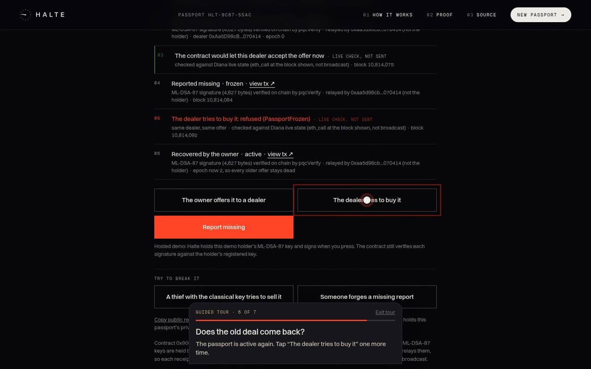
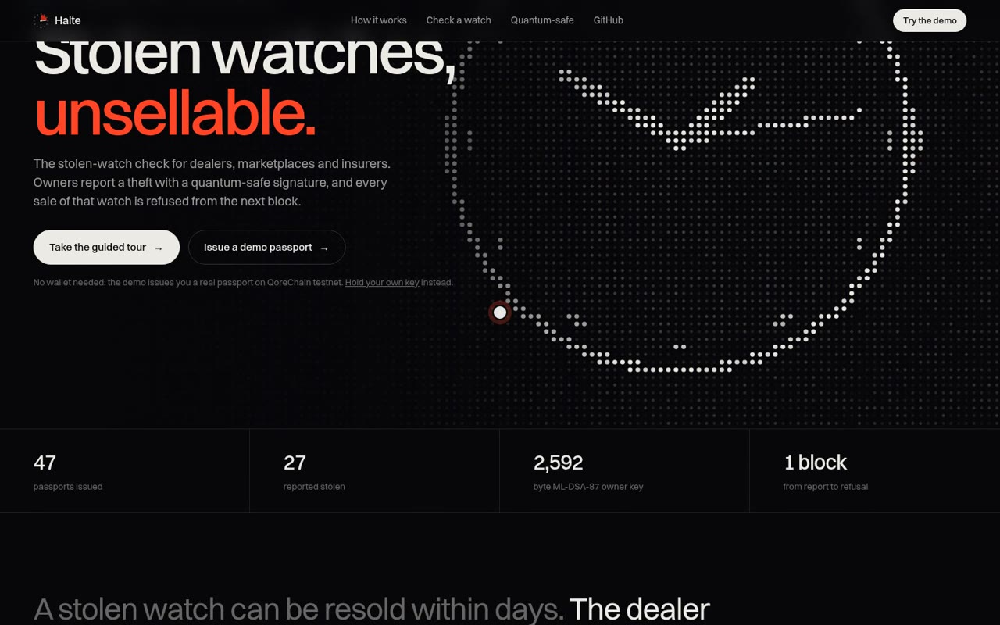

A watch ticks through the whole film. When it's reported stolen, the second hand stops, the sound stops, and every sale is refused. The same dealer presses the same button three times. Only the answer changes. That repetition carries the story even with the sound off.
Our brand is a watch dial made of lattice dots. ML-DSA is lattice cryptography, so the brand already carries the tech. The film uses that dial as its pulse.
| Reference | We take | We leave |
|---|---|---|
| Hang | The structure: hook, "what if", intro with the feature list rolling, a step-by-step walkthrough, scale, call to action. | The light canvas and the sparkle narrator. Our guided tour card already tells the viewer where to look. |
| Signet | The real app in a clean Mac window on a flat backdrop. The glossy cursor that stretches as it moves and rings on click. Chapter pills with one coloured word. Push-ins on the result. | Lime green, floating 3D ornaments, the mascot. |
| Pixel icons | Words landing one at a time in the opening. Dots as a material: the dial dissolves into dots and re-forms between chapters. | Orange silhouettes, light and dark flips. |
| OSMO | Rhythm. One idea per cut, and the precise cut from a full-frame visual into the readable app window. | A new texture on every word. Too noisy for a trust product. |
Graphite backdrop with a faint dot grid, the live site in a Mac-style window, a chapter pill at the top and captions at the bottom. The cursor below is moving live.

Signet's idea in our colours: a pearl-white glossy dot with a soft shadow. It stretches along its path when it moves fast and settles round when it stops. On a click, twelve dots ring out like the hour marks of a dial. The ring is red only once, on Report missing.
Short phrases in the site's font. Each word lights up as it's spoken. The key word of each line turns red, or green for the one "can buy" moment. No bounce or pop.
From Signet: a white pill at the top names each step of the walkthrough, so a judge always knows where they are.
App frames are real screens from the live site. In the final film, each one is recorded at a larger zoom and the camera pushes in where marked.
The same line on each ElevenLabs model, with captions synced to the timing of each word. Tap one to hear it.

Plain sentences, real numbers, one idea per line. No AI-ad phrasing.
The pearl glossy dot above (my pick, closest to Signet), or Astra's alternative: a tiny dot-matrix watch hand that shortens by one dot when it clicks.
Pick a model from the three takes. If you want less accent, the clone has to be retrained from new recordings; settings alone won't change it. Also check that it says "Halte" and "QoreChain" the way you do.
A single quiet tick under the opening that stops at the theft. On top of that, either no music (more serious) or a low ambient bed that drops out at the freeze. I'd go with the tick and a very low bed.
Change any line you want, or say "approved". When the storyboard and script are approved, I record the app at film quality, build the film, and send you a rough cut before the final.